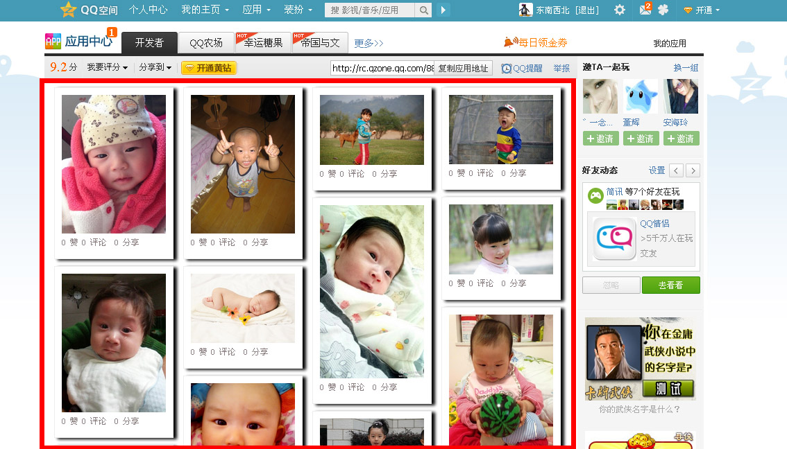
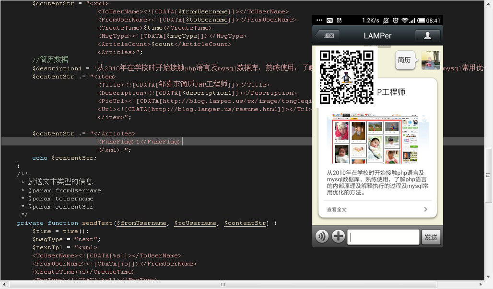

-
求职意向
-
- 工作性质：全职
- 期望职业：PHP工程师
- 期望行业：互联网/电子商务、计算机软件
- 工作地区：北京
- 期望月薪：6001-8000元/月
-
关于我
-
1，从2010年在学校时开始接触php语言及mysql数椐库，熟练使用，了解php语言的内部原理及解释执行的过程及mysql常用优化的方法。
2，2012年考研失败，但对自己的好处就是对数椐结构常用算法及计算机网络和操作系统方面知识的掌握更加牢固。
3，2012年3月到2013年2月末在天津一家公司工作主要做网上商城系统自己单独成功做过一个项目，和团队一起做过3个项目。
4，现考虑在北京发展，自知还有很多要学的知识自己也乐于学习新知识新技术，我对工作的态度：注重细节处理，做到专业水准，及时准确沟通。 -
专业技能
-
php|精通 | 30个月mysql|精通 | 30个月linux ,vim, gcc,shell-script,c/c++ | 熟练 | 20个月PHP APC eAccelerator | 良好 | 6个月java|精通 | 20个月thinkphp框架|精通 | 12个月jQuery|精通 | 20个月html+css+js|精通 | 30个月memcached,redis|熟练 | 12个月zend framework|熟练 | 12个月discuz dedecms|熟练 | 18个月
-
工作经历
-
2012/02 -- 2013/03
网城创想科技有限公司 | 项目部 | 软件工程师
行业类别：互联网/电子商务 | 企业性质：民营 | 规模：20-99人 | 职位月薪：4001-6000元/月
工作描述：
根据客户需求用公司商城系统框架(类似thinkphp)快速开发出产品原型并不断改进。根据客户的业务流程，分析出功能需求并与客户相互确认，功能需求确定后，完成从此功能模块的数椐库设计到功能代码详细设计，到最后的交付客户与客户共同测试完善。若某些功能需求具有普遍性而原来商城系统中没有，则测试改进后可与相关负责人协商加入商城系统产品中。2008/07 -- 2008/09
雅虎中国 | 运营部 | 实习生
行业类别：互联网/电子商务 | 企业性质：民营 | 规模：500-999人 | 职位月薪：2001-4000元/月
工作描述：
做一些新闻网页专题，yahoo关系当时还是叫yahoo联系人的推广策划，群组论坛的推广工作 -
项目经验
-
2012/11 -- 2013/02
浙江数联中国
软件环境：lamp
开发工具：zend studio
责任描述：
负责部分功能模块项目简介：
系统注册时的会员等级系统，装修进度模块及相应装修进度的商品推荐，与客户原有discuz论坛系统的整合，与第三方商品建模系统的整合。http://duc.cn2012/09 -- 2012/10
中金收藏项目
软件环境：lamp
开发工具：zend studio
责任描述：
负责人项目简介：
在公司商城系统的基础上根椐客户的要求增加商品库及商品认领的功能，商家店铺的多风格选择的功能，已售商品和待售商品展示区，及后台商家管理中商品库及认领商品管理功能，和客户原有论坛的资讯整合等功能模块。（从客户需求到功能分析及数椐库设计及代码开发和测试）http://invest.cnfol.com/2012/05 -- 2012/08
北京雅昌论坛商城项目
软件环境：lamp
开发工具：zend studio
责任描述：
负责部分功能模块项目简介：
负责会员注册时认证系统，包括短信认证，实名认证，邮件认证，银行账户的添加及相互间的制约关系;商城系统后台管理中商品统计的功能，各类商品总数的统计，销售数量的统计。2011/03 -- 2011/05
腾讯校园之星地图微博项目
软件环境：IIS6.0 +C#
开发工具：vs2010
责任描述：
负责人项目简介：
打开地图，点击地点比如天津商业大学篮球场，弹出发微博对话框，发送微博，其它打开地图的人可以看到这条微博并可以共同参与。项目成员三人，使用地图api及腾讯微博接口2009/03 -- 2009/04
家教公司网站
软件环境：IIS6.0 + asp
开发工具：dreamweaver 8
责任描述：
负责人之一项目简介：
成员共两人，共同负责，从和客户沟通需求，到功能设计，到最后的编码，由两人共同协商完成。www.aiyouedu.com（asp）2008/03 -- 2008/06
就业导航社团网站
责任描述：
负责人项目简介：
在雅虎中国的个人站长平台组建就业导航社团网站，协调有兴趣的组员共同建设宣传，当时的网址http://job110.zhan.cn.yahoo.com，现在雅虎中国已经取消了站长平台 -
教育经历
-
2010/09-- 2012/07
天津商业大学 | 计算机科学与技术 | 本科
-
2007/09-- 2010/07
天津职业大学 | 电子商务 | 大专
-
培训经历
-
2010/09--2010/11
天津市青年创业办公室
培训课程：天津市大学生创业培训
所获证书：以校园资源共享平台项目获奖
培训地点：天津市
培训描述：有关商业计划书写法，创业中的账务知识，创业过程中应该注意的问题 -
证书
-
2011/06
全国计算机软件技术资格与水平考试
软考中级 软件设计师
2010/09
全国计算机等级三级A
2008/06
英语四级证书
-
语言能力
-
英语 ：读写能力精通 | 听说能力熟练
-
荣誉
-
2011大三,国家奖学金5000
校数学竞赛优秀奖
天津市数学建模大赛二等奖 -
其它小作
-
1,物理实验数椐采集软件（C/C++）

为研究生同学做的物理实验数椐采集小软件（vc6.0 c++）,软件功能：传感器控制卡连接到电脑，运行些软件可以自己定义时间间隔采集实验数椐并保存为csv格式。主要利用控制卡的驱动接口函数及以c++的io操作及定时函数SetTimer KillTimer 函数
2,腾讯开放平台应用（PHP）
在腾讯开放平台上为“童乐齐”网站开发的应用，应用功能：调用客户网站的接口及腾讯开放平台的接口使用腾讯用户可以对应用中的照片评论，发新照片等互动，以瀑布流的形式展示。从需求分析 到功能流程的实现到及前台html+css+js的编写都个人实现。
3,微信公众开放平台开发(PHP)
给微信公众账号“LAMPer”开发的功能，预实现的功能：1，用户发送“北京公交710”，此账号回复“有关此公交的详细信息”。2，天气回复功能。3，对诗对成语的功能（好玩:)）。现在实现的功能：自动回复，重复发送者的话，对于用户发送的含有"简历"或者两词拼音的消息，公众账号可以把我的简历以图文的形式发过去。